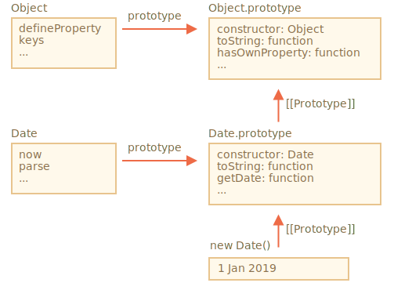

内建的类，例如 Array，Map 等也都是可以扩展的（extendable）。
例如，这里有一个继承自原生 Array 的类 PowerArray：
// 给 PowerArray 新增了一个方法（可以增加更多）
class PowerArray extends Array {
isEmpty() {
return this.length === 0;
}
}
let arr = new PowerArray(1, 2, 5, 10, 50);
alert(arr.isEmpty()); // false
let filteredArr = arr.filter(item => item >= 10);
alert(filteredArr); // 10, 50
alert(filteredArr.isEmpty()); // false请注意一个非常有趣的事儿。内建的方法例如 filter，map 等 — 返回的正是子类 PowerArray 的新对象。它们内部使用了对象的 constructor 属性来实现这一功能。
在上面的例子中，
arr.constructor === PowerArray当 arr.filter() 被调用时，它的内部使用的是 arr.constructor 来创建新的结果数组，而不是使用原生的 Array。这真的很酷，因为我们可以在结果数组上继续使用 PowerArray 的方法。
甚至，我们可以定制这种行为。
我们可以给这个类添加一个特殊的静态 getter Symbol.species。如果存在，则应返回 JavaScript 在内部用来在 map 和 filter 等方法中创建新实体的 constructor。
如果我们希望像 map 或 filter 这样的内建方法返回常规数组，我们可以在 Symbol.species 中返回 Array，就像这样：
class PowerArray extends Array {
isEmpty() {
return this.length === 0;
}
*!*
// 内建方法将使用这个作为 constructor
static get [Symbol.species]() {
return Array;
}
*/!*
}
let arr = new PowerArray(1, 2, 5, 10, 50);
alert(arr.isEmpty()); // false
// filter 使用 arr.constructor[Symbol.species] 作为 constructor 创建新数组
let filteredArr = arr.filter(item => item >= 10);
*!*
// filteredArr 不是 PowerArray，而是 Array
*/!*
alert(filteredArr.isEmpty()); // Error: filteredArr.isEmpty is not a function正如你所看到的，现在 .filter 返回 Array。所以扩展的功能不再传递。
其他集合，例如 `Map` 和 `Set` 的工作方式类似。它们也使用 `Symbol.species`。内建对象有它们自己的静态方法，例如 Object.keys，Array.isArray 等。
如我们所知道的，原生的类互相扩展。例如，Array 扩展自 Object。
通常，当一个类扩展另一个类时，静态方法和非静态方法都会被继承。这已经在 中详细地解释过了。
但内建类却是一个例外。它们相互间不继承静态方法。
例如，Array 和 Date 都继承自 Object，所以它们的实例都有来自 Object.prototype 的方法。但 Array.[[Prototype]] 并不指向 Object，所以它们没有例如 Array.keys()（或 Date.keys()）这些静态方法。
这里有一张 Date 和 Object 的结构关系图：

正如你所看到的，Date 和 Object 之间没有连结。它们是独立的，只有 Date.prototype 继承自 Object.prototype，仅此而已。
与我们所了解的通过 extends 获得的继承相比，这是内建对象之间继承的一个重要区别。